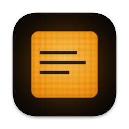

You can turn on Evening Reader Saver’s extension in Safari Extensions preferences.
Evening Reader Saver’s extension is currently on. You can turn it off in Safari Extensions preferences.
Evening Reader Saver’s extension is currently off. You can turn it on in Safari Extensions preferences.
Save to Evening Reader is ready for too. Add it from the Chrome Web Store, and it saves without anything else to install.
To save from Chrome too, move Evening Reader Saver to your Applications folder and open it again.
Evening Reader Saver couldn't set itself up for Chrome: